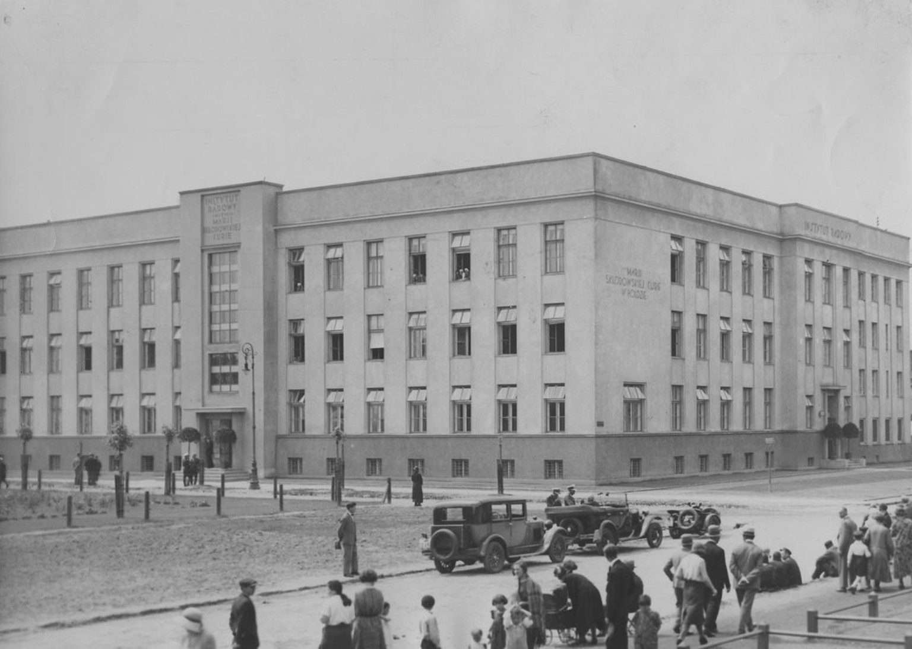

She is waiting in the park
Welcome to a place rich in history! Here, at the Maria Skłodowska-Curie Institute of Oncology, the mission Maria began continues today—fighting cancer. The first Radium Institute was founded in Paris in 1914, but in 1932, a twin research center was established here in Warsaw. Maria, ever committed to supporting science in her homeland, donated one gram of radium she had purchased thanks to the generosity of Polish Americans.
Fun fact: there’s a tree on the Institute’s grounds that Maria herself planted. It silently witnesses the legacy of science and dedication that earned her two Nobel Prizes.